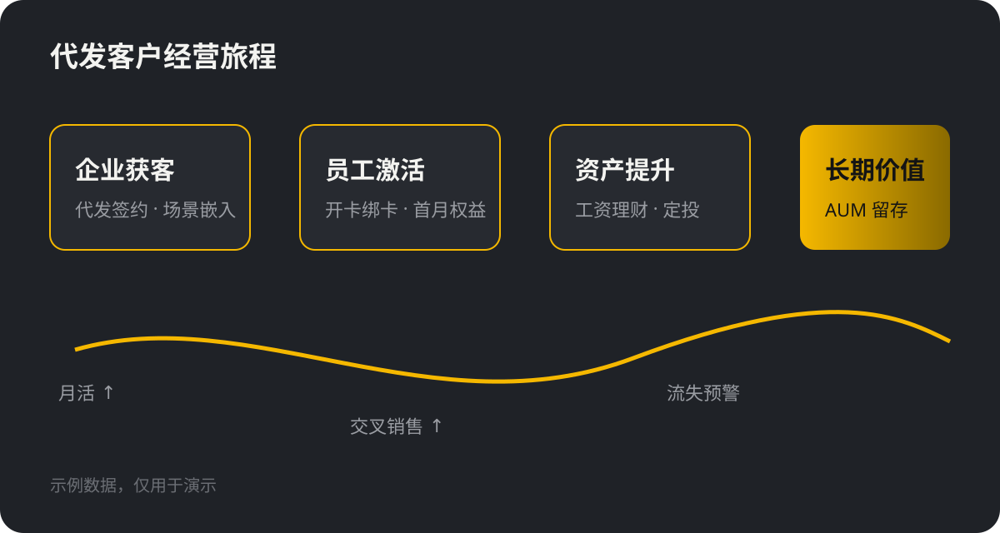

零售数智化 · 代发专题
代发长尾客户
数智化经营实践
以企业代发为入口，用数据和 AI 把"沉睡的工资户"变成有温度的长期客户
面向股份制银行类型专题交流日期2026.10
行业洞察
代发客群：规模大、活跃低、价值待挖掘
代发客户占零售客户总量三到四成，但多数仅"工资过路"，资产沉淀与产品渗透明显偏低
方法论
长尾经营四步法：识别 · 触达 · 转化 · 留存
用"数据中台 + 智能营销 + 数字员工"的组合，把人工难以覆盖的长尾客户纳入规模化经营
1
精准识别
代发流水 + 行为数据构建客户分层与潜力标签
4
流失预警
资金转出与活跃下降实时预警，数字员工跟进
客户旅程
从"代发签约"到"长期价值"的经营闭环
- 企业端：代发签约同步开通薪酬、报销等场景
- 员工端：首月激活权益 + 专属理财经理（数字员工）
- 经营端：旅程节点埋点，按周复盘转化漏斗

客户案例
某股份行：代发长尾客户 AUM 半年提升 28%
挑战
- 代发客户 600 万+，理财经理人均服务超 3000 户
- 工资到账即转出，资产沉淀低
方案
- 客户分层 + 发薪日智能营销
- 数字员工承接 80% 长尾客户日常陪伴
模式升级
从"人海战术"到"人机协同"
传统经营
- 按资产门槛分配客户经理，长尾无人管
- 营销靠短信群发，转化率不足 0.5%
- 流失后才发现，挽回成本高
数智化经营
- 全量客户分层，数字员工 7×24 陪伴
- 关键时刻精准触达，转化率提升 5 倍
- 资金异动实时预警，提前干预